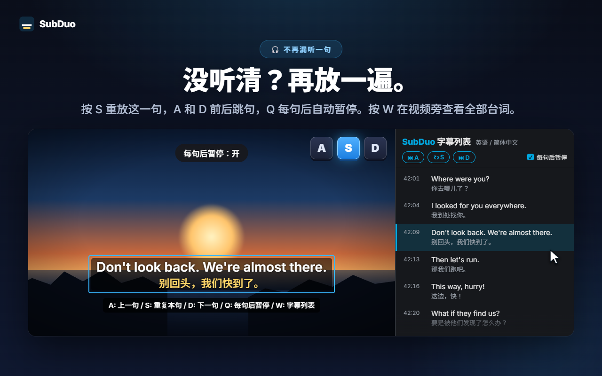
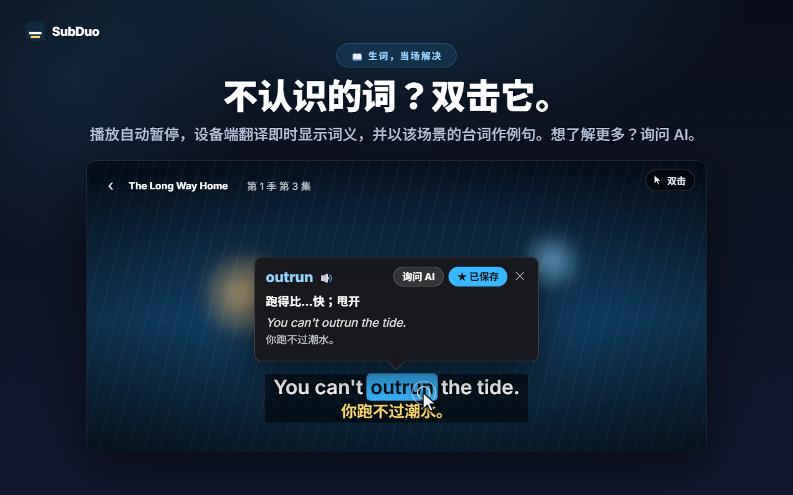
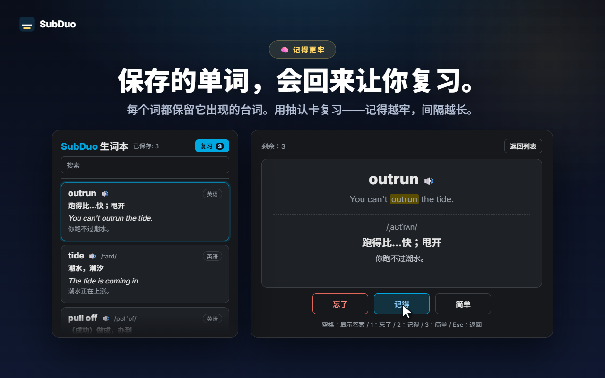

任选两种字幕语言
视频开始播放时，自动检测网站提供的所有字幕轨，包括 YouTube 的自动生成字幕。每行各选一种语言，也可以隐藏其中一行。
SubDuo 同时显示两种语言的字幕——上行原文，下行中文。双击单词即可查看词义，一个按键就能重放台词，学到的词还能存进内置的生词本。
使用各网站自带的字幕 · 无需账号 · 字幕留在你的浏览器中
流媒体播放器一次只能显示一种字幕语言。SubDuo 再加上一种，并附带从中学习的工具。
扩展的实际界面，以中文展示。
从影片提供的字幕轨中任选两种——上行原文，下行中文。字幕可拖到任意位置，在某一行上滚动滚轮即可调整大小，右键可更改颜色、透明度或模糊。

按 S 重复本句，A 和 D 跳到上一句和下一句，按 Q 开启每句后暂停。按 W 在 Chrome 侧边栏打开字幕列表——双语逐句对照，点击任意一行即可跳转到该处。

视频随即暂停，卡片立刻显示词义——由 Chrome 内置翻译在你的设备上完成，并以该场景的台词作为例句。按住 Alt 拖动可选取短语。点“询问 AI”，可查看贴合语境的释义、发音和例句。

每个保存的单词都会保留它出现的那句台词。在生词本中搜索、筛选、播放发音，并用抽认卡复习——越熟悉的词，隔得越久才会再次出现。
无需账号，无需设置。安装后按下播放即可。
从 Chrome 应用商店安装 SubDuo，然后在 Prime Video、YouTube、Netflix、Disney+ 或 TED 上播放视频。
点击 SubDuo 图标，为上行和下行各选一种字幕语言。列表只显示该影片提供的字幕。
双击单词查词，按 A、S 或 D 重放台词，生词本可从弹出窗口打开。
为边看边学的人打造——不需要时，字幕绝不碍事。
视频开始播放时，自动检测网站提供的所有字幕轨，包括 YouTube 的自动生成字幕。每行各选一种语言，也可以隐藏其中一行。
双击或按住 Alt 点击单词，或按住 Alt 拖动选取短语。播放暂停，译文直接显示在视频上，翻译在你的设备上完成。
以你的显示语言给出贴合语境的释义、发音和例句。每天最多 20 次，免费。
一键保存单词，可搜索、按语言筛选，点 🔊 听发音。抽认卡会把你已经记住的词间隔得更久。
A 上一句，S 重复本句，D 下一句。Q 每句后暂停。模糊其中一行来自我测试，再把鼠标指向它核对答案。
所有台词以双语显示在视频旁边。当前台词高亮显示，点击任意一行即可跳转。按 W 打开。
拖动移动位置，滚轮调整某一行的大小，方向键微调，可左对齐、居中或右对齐。右键可逐行设置颜色、透明度和模糊。
YouTube 上字幕大一点，Netflix 上低调一点——设置按网站分别保存，并通过你的 Chrome 同步。
菜单、翻译和 AI 解说都使用你选择的显示语言，可以与 Chrome 的语言不同。
SubDuo 读取各网站已经发送到你浏览器的字幕文件，并在浏览器中绘制。它唯一对外发送的，是你选择询问 AI 的短语及其所在的字幕台词。
字幕在你的浏览器中解析和绘制。你的设置、生词本和观看记录不会发送给开发者。单词翻译由 Chrome 内置翻译在你的设备上完成。
当你点“询问 AI”时，所选短语、它所在的字幕台词和屏幕上的另一行、语言代码，以及一个随机设备标识符（用于每日次数限制）会发送到 SubDuo 服务器，由服务器请求 OpenAI 生成解释。为运行服务，你的 IP 地址会被处理。
无需注册任何东西。扩展中不含广告，也不含数据统计工具。
“storage”用于设置和生词本，“scripting”用于更新后重新连接已打开的标签页，“sidePanel”用于字幕列表，此外仅访问五个支持的网站。
从 Chrome 应用商店安装，只需几秒